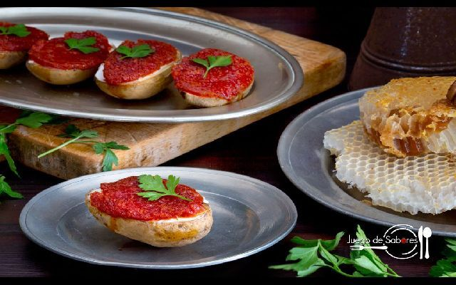

Inicio
Sobre mí
Recetas
Contacto
Otras Cosas
Aperitivo de Patata, Queso, Sobrasada y Miel

⏰
Tiempo total:
45 minutos
Ingredientes
4 patatas medianas
Queso de untar, brie o manchego al gusto
200 gramos de sobrasada
Miel
Sal y pimienta
Preparación
1.
Lavar bien las patatas, secar y cortar por la mitad.
2.
Salpimentar las patatas y hornear sobre papel sulfurizado durante 35-40 minutos.
3.
Retirar del horno, cubrir con queso, sobrasada y un hilo de miel. Volver a hornear 5 minutos.
4.
Adornar con hojas de perifollo y servir caliente.
Autor: Recetas Gourmet
Consejos:
Prueba con queso manchego para un toque más intenso.
Recetas